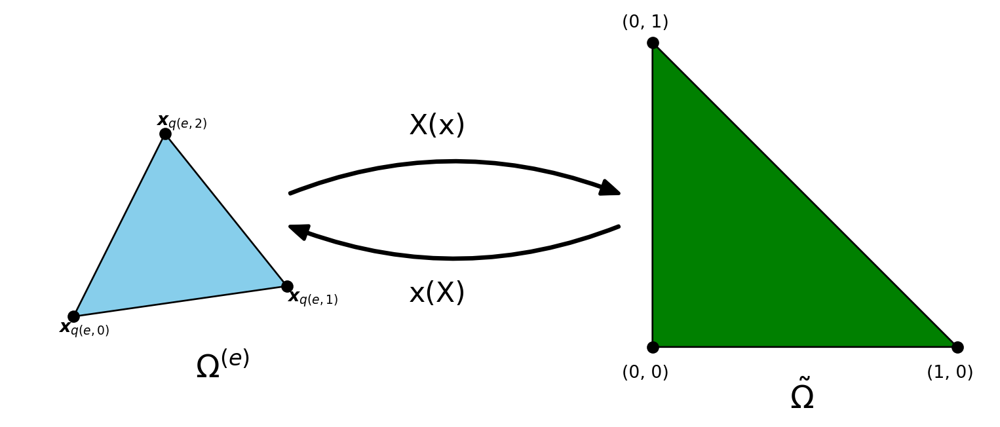
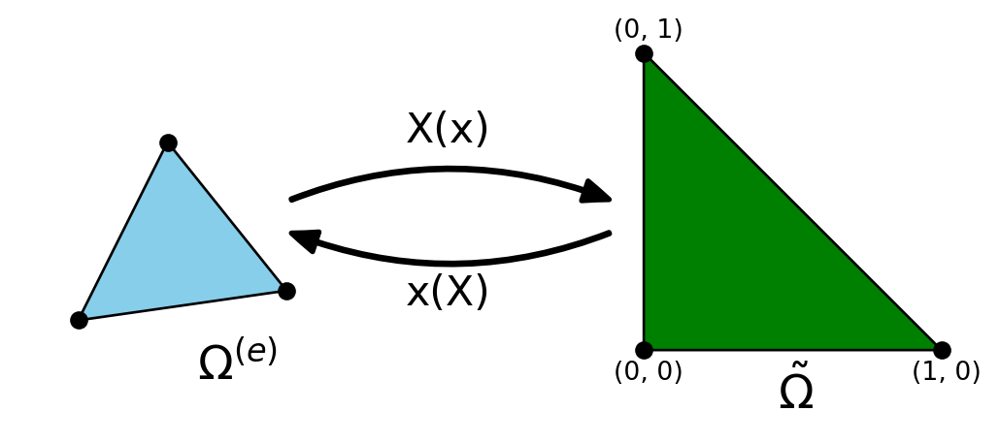

Solving PDEs with the FEM
MATMEK-4270
Prof. Mikael Mortensen, University of Oslo
Solving PDEs with the finite element method
The procedure for solving differential equations with the finite element method is much the same as for global basis functions. However
- Basis functions \(\psi_j(x)\) are local \[ u_N(x) = \sum_{j=0}^N \hat{u}_j \psi_j(x) \]
- We always use reference elements (lines, triangles, tetrahedra)
- Matrices and vectors are assembled elementwise \[ a_{ij} = (\psi_j, \psi_i) = \sum_{e=0}^{N_e-1} \int_{\Omega^{(e)}} \psi_j \psi_i d\Omega = \sum_{e=0}^{N_e-1} A_e \]
- It is very common to use Lagrange polynomials for basis functions
- PDEs are normally not solved using tensor products in multiple dimensions
Solving PDEs with FEM
The Galerkin method is as always: Find \(u_N \in V_N\) such that \[ (\mathcal{R}_N, v) = 0, \quad \forall \, v \in V_N, \] where \(\mathcal{R}_N = \mathcal{L}(u_N)-f\) is a residual and \(\mathcal{L}(u)\) is some mathematical operator.
- Choose \(V_N\) and everything follows.
- Insert for \(u_N = \sum_{j=0}^N \hat{u}_j \psi_j\) and \(v=\psi_i\) to obtain the linear algebra problem.
- All the complexity lies in the implementation, using elementwise integration and mapping to a reference domain.
- It is very common (and some times necessary) to use integration by parts or Green’s first identity in order to manipulate the variational equation and to incorporate natural Neumann boundary conditions.
- Boundary conditions are not incorporated into the basis functions.
- We will only use (local) Lagrange polynomials as basis functions, but there are many other options.
Example - Poisson’s equation with inhomogeneous Dirichlet boundary conditions
\[ u'' = f, \quad x \in (0, L), \, u(0) = a, u(L) = b, \]
First choose \(V_N\). We can here use piecewise linear polynomials or even higher order
\[ V_N = \text{span}\{\psi_j(x)\}_{j=0}^N \]
Remember
\[ \psi_j(x_i) = \delta_{ij} \]
so each basis function is one in exactly one node and zero in all the others. Quadratic:
Use integration by parts
The variational Galerkin form is now to find \(u_N \in V_N\) such that
\[ (u_N'', v) = (f, v), \quad \forall \, v \in V_N \]
But piecewise polynomials cannot be differentiated twice!
Solution: integration by parts \(\left((u'', v) = -(u', v')+ [u'v]_{x=x_L}^{x=x_R}\right)\)
\[ (u_N', v') = -(f, v) + [u_N'v]_{x=0}^{x=L}, \quad \forall \, v \in V_N \]
Inserting for \(u_N\) and \(v=\psi_i\) we get the linear algebra problem
\[ \sum_{j=0}^N(\psi'_j, \psi'_i) \hat{u}_j = -(f, \psi_i) + u'_N(L)\psi_i(L) - u'_N(0)\psi_i(0) \]
Since \(\psi_i(0)=1\) for \(i=0\) and \(\psi_i(L)=1\) for \(i=N\) and zero for all \(i=1, 2, \ldots, N-1\) the last two terms are only relevant for \(i=0\) and \(i=N\).
Dirichlet boundary conditions
We have \(N+1\) equations for \(N+1\) unknowns \(\{\hat{u}_i\}_{i=0}^N\) \[ \sum_{j=0}^N(\psi'_j, \psi'_i) \hat{u}_j = -(f, \psi_i) + u'_N(L)\psi_i(L) - u'_N(0)\psi_i(0) \]
The boundary term \(u'_N(L)\psi_i(L) - u'_N(0)\psi_i(0)\) can be used to specify Neumann boundary conditions. For Dirichlet we have
\[ u(0) = u_N(x_0) = \sum_{j=0}^N \hat{u}_j \psi_j(x_0) = \psi_0(x_0) \hat{u}_0 = \hat{u}_0 = a \]
and
\[ u(L) = u_N(x_N) = \sum_{j=0}^N \hat{u}_j \psi_j(x_N) = \psi_N(x_N) \hat{u}_N = \hat{u}_N = b. \]
Hence \(\hat{u}_0=a\) and \(\hat{u}_N=b\) are determined from bcs, leaving \(N-1\) unknowns \(\{\hat{u}_i\}_{i=1}^{N-1}\)
Assembly incorporating Dirichlet
\[ \sum_{j=0}^N(\psi'_j, \psi'_i) \hat{u}_j = -(f, \psi_i), \quad i=1, 2, \ldots, N-1 \]
\[ \hat{u}_0=a \text{ and } \hat{u}_N=b \]
Matrix form, using \(s_{ij} = (\psi'_j, \psi'_i)\) and \(f_i = (f, \psi_i)\):
\[ \begin{bmatrix} 1 & 0 & 0 & \cdots & 0 \\ s_{10} & s_{11}& s_{12} & \cdots & s_{1N} \\ \vdots & \vdots & \vdots & \ddots & \cdots \\ s_{N-1, 0} & s_{N-1, 1}& s_{N-1, 2}& \cdots & s_{N-1,N} \\ 0 & \cdots & 0 & 0 & 1 \end{bmatrix} \begin{bmatrix} \hat{u}_0 \\ \hat{u}_1 \\ \vdots \\ \hat{u}_{N-1} \\ \hat{u}_N \end{bmatrix} = \begin{bmatrix} a \\ -f_1 \\ \vdots \\ -f_{N-1} \\ b \end{bmatrix} \]
Note the idented first and last row due to bcs. Also, most of the \(s_{ij}\) items will be zero since the basis functions are local.
Finite element assembly
\[ s_{ij} = (\psi'_j, \psi'_i) = \sum_{e=0}^{N_e-1} \int_{\Omega^{(e)}} \psi'_j \psi'_i d\Omega \]
We will use the same notation as in lecture 10 and
\[ s^{(e)}_{ij} = \int_{\Omega^{(e)}} \psi'_j \psi'_i d\Omega \]
is the element stiffness matrix of shape \((N+1) \times (N+1)\). We also use the same mapping from local to global degrees of freedom, and define a dense element matrix as
\[ \tilde{s}^{(e)}_{rs} = s^{(e)}_{q(e,r), q(e, s)}, \, (r, s) \in \mathcal{I}_d^2 \]
for finite elements of order \(d\) and \(\mathcal{I}_d=\{0, 1, \ldots, d\}\). Remember that \(d=1\) for linear elements, and then higher order elements (\(d>1\)) simply use more nodes within each element.
Mapping to reference domain \(\tilde{\Omega} = [-1, 1]\)
The finite element stiffness matrix is implemented using a mapping to the reference domain \(X\in[-1, 1]\), and the reference basis functions
\[ \psi_{q(e, r)}(x) = \ell_r(X) \]
where the element is \(\Omega^{(e)} = [x_L, x_R]\) and \(h(e)=x_R-x_L\), such that
\[ x = \frac{1}{2}(x_L+x_R) + \frac{h(e)}{2}X \quad \text{and} \quad \frac{dx}{dX} = \frac{h(e)}{2} \]
Inserting this into the expression for \(\tilde{s}_{rs}\):
\[ \begin{align*} \tilde{s}^{(e)}_{rs} &= \int_{\Omega^{(e)}} \frac{d \psi_{q(e, s)}(x)}{dx} \frac{d \psi_{q(e, r)}(x)}{dx} dx, \\ &= \int_{-1}^1 \frac{d \ell_s(X)}{dX} \frac{dX}{dx} \frac{d \ell_r(X)}{dX} \frac{dX}{dx} \frac{dx}{dX}dX \end{align*} \]
Element stiffness matrix
We get
\[ \tilde{s}^{(e)}_{rs} = \int_{-1}^1 \frac{d \ell_s(X)}{dX} \frac{d \ell_r(X)}{dX} \frac{2}{h(e)} dX \]
which is also
\[ \tilde{s}^{(e)}_{rs} = \frac{2}{h(e)} \int_{-1}^1 \ell'_s(X) \ell'_r(X) dX \]
Note
Note that the integral is independent of the actual element. All information about element \(e\) is in the size \(h(e)\).
Note
For piecewise linear elements the integrand is constant! For higher order elements the integral requires some actual work!
Implementation
from lagrange import Lagrangebasis, Lagrangefunction
x, h = sp.symbols('x,h')
l = Lagrangebasis([-1, 1])
se = lambda r, s: sp.integrate(l[r].diff(x, 1)*l[s].diff(x, 1), (x, -1, 1))
S1e = 2/h*sp.Matrix([[se(0, 0), se(0, 1)],[se(1, 0), se(1, 1)]])
S1e\(\displaystyle \left[\begin{matrix}\frac{1}{h} & - \frac{1}{h}\\- \frac{1}{h} & \frac{1}{h}\end{matrix}\right]\)
Note
For Lagrange basis functions using just a few nodes the Sympy functions in the lagrange.py module are robust and efficient.
l = Lagrangebasis([-1, 0, 1]) # 3 nodes per element
S2e = 2/h*sp.Matrix(np.array([[se(i, j) for i in range(3) for j in range(3)]]).reshape(3, 3))
S2e\(\displaystyle \left[\begin{matrix}\frac{7}{3 h} & - \frac{8}{3 h} & \frac{1}{3 h}\\- \frac{8}{3 h} & \frac{16}{3 h} & - \frac{8}{3 h}\\\frac{1}{3 h} & - \frac{8}{3 h} & \frac{7}{3 h}\end{matrix}\right]\)
Completely generic implementation for any matrix
The generic matrix
\[ q^{(m,n)}_{ij} = \left(\frac{d^n \psi_j}{dx^n}, \frac{d^m \psi_i}{dx^m} \right) \]
requires the generic element matrix
\[ \tilde{q}^{(e,m,n)}_{rs} = \int_{\Omega^{(e)}} \frac{d^n \psi_{q(e, s)}}{dx^n} \frac{d^m \psi_{q(e, r)}}{dx^m} dx \]
We can now use that
\[ \frac{d^n \psi_{q(e, r)}}{dx^n} = \frac{d^{n-1} }{dx^{n-1}}\left(\frac{d \psi_{q(e,r)}}{dx} \right) = \frac{d^{n-1}}{dx^{n-1}}\left( \frac{d \ell_r}{dX}\frac{dX}{dx}\right) = \frac{2}{h} \frac{d^{n-1}}{dx^{n-1}}\left( \frac{d \ell_r}{dX} \right) \]
which recursively leads to
\[ \frac{d^n \psi_{q(e, r)}}{dx^n} = \left(\frac{2}{h}\right)^n \frac{d^n \ell_r}{dX^n} \]
Generic element matrix
\[ \tilde{q}^{(e,m,n)}_{rs} = \int_{\Omega^{(e)}} \frac{d^n \psi_{q(e, s)}}{dx^n} \frac{d^m \psi_{q(e, r)}}{dx^m} dx \quad \text{and} \quad \frac{d^n \psi_{q(e, r)}}{dx^n} = \left(\frac{2}{h}\right)^n \frac{d^n \ell_r}{dX^n} \]
leads to
\[ \tilde{q}^{(e,m,n)}_{rs} = \left(\frac{h}{2}\right)^{1-(m+n)} \int_{-1}^1 \ell^{(n)}_s(X) \ell^{(m)}_r(X) dX, \]
where \(\ell^{(n)}_r = \frac{d^{n} \ell_r}{dX^n}\).
Note
This represents all the element matrices you will ever need, and it is easily implemented using a few lines of Sympy code.
Note
Higher order of the derivatives \((m, n)\) requires higher order elements. Remember, piecewise linear elements can only be differentiated once.
Sympy implementation of generic element matrix
Using uniform nodes
\[ X_j = -1 + \frac{2j}{d}, \quad j=0,1,\ldots, d \]
Xj = lambda d: np.array([sp.Rational(2*i, d) for i in np.arange(d+1)])-1
qe = lambda l, r, s, m, n: sp.integrate(l[r].diff(x, m)*l[s].diff(x, n), (x, -1, 1))
def Qe(d=1, m=0, n=0):
A = np.zeros((d+1, d+1), dtype=object)
l = Lagrangebasis(Xj(d))
for r in range(d+1):
for s in range(d+1):
A[r, s] = qe(l, r, s, m, n)
return (h/2)**(1-m-n)*sp.Matrix(A)\(\displaystyle \left[\begin{matrix}\frac{81}{h^{3}} & - \frac{405}{2 h^{3}} & \frac{162}{h^{3}} & - \frac{81}{2 h^{3}}\\- \frac{405}{2 h^{3}} & \frac{567}{h^{3}} & - \frac{1053}{2 h^{3}} & \frac{162}{h^{3}}\\\frac{162}{h^{3}} & - \frac{1053}{2 h^{3}} & \frac{567}{h^{3}} & - \frac{405}{2 h^{3}}\\- \frac{81}{2 h^{3}} & \frac{162}{h^{3}} & - \frac{405}{2 h^{3}} & \frac{81}{h^{3}}\end{matrix}\right]\)
Assemble the generic matrix \(Q^{(m,n)}\)
\[ q^{(m, n)}_{ij} = \int_{\Omega} \psi^{(n)}_j \psi^{(m)}_i dx \]
- For all elements \(e=0,\ldots, N_e-1\)
- For all \(r=0,\ldots, d\)
- For all \(s=0, \ldots, d\)
- For all \(r=0,\ldots, d\)
\[ q^{(m,n)}_{q(e,r),q(e,s)} += \tilde{q}^{(e,m,n)}_{rs} \]
Implementation
from fem import get_element_boundaries, get_element_length, local_to_global_map, map_u_true_domain, fe_evaluate_v
def assemble_q(xj, d=1, m=0, n=0):
N = len(xj)-1
Ne = N//d
A = np.zeros((N+1, N+1))
Q = Qe(d, m, n)
for elem in range(Ne):
hj = get_element_length(xj, elem, d=d)
s0 = local_to_global_map(elem, d=d)
A[s0, s0] += np.array(Q.subs(h, hj), dtype=float)
return ACreate mesh and assemble any generic, numerical matrix:
\(Q^{(1,1)}\) using \(d=1, N=6\)
\(Q^{(2,2)}\) using \(d=2, N=6\)
[[ 432. -864. 432. 0. 0. 0. 0.]
[-864. 1728. -864. 0. 0. 0. 0.]
[ 432. -864. 864. -864. 432. 0. 0.]
[ 0. 0. -864. 1728. -864. 0. 0.]
[ 0. 0. 432. -864. 864. -864. 432.]
[ 0. 0. 0. 0. -864. 1728. -864.]
[ 0. 0. 0. 0. 432. -864. 432.]]Solve any linear differential equation
For example the Helmholtz equation: \[ u''+\alpha u = f, \quad x \in (0, 10) \]
Find \(u_N \in V_N\) such that
\[ -(u'_N, v') + \alpha (u_N, v) = (f, v) - [u'_Nv]_{x=0}^{x=10}, \quad \forall \, v \in V_N \]
Assume manufactured solution \(u(x)=J_0(x)\), where \(J_0(x)\) is the 0 order Bessel function of the first kind. Use Dirichlet boundary conditions, \(u(0)=J_0(0)\) and \(u(10)=J_0(10)\), and thus neglect \([u'_Nv]_{x=0}^{x=10}\).
\[ (-S + \alpha M)\boldsymbol{\hat{u}} = \boldsymbol{b} \]
Assemble right hand side and solve
ue = sp.besselj(0, x)
f = ue.diff(x, 2) + alpha*ue
def assemble_b(u, xj, d=1):
l = Lagrangebasis(np.linspace(-1, 1, d+1), sympy=False)
N = len(xj)-1
b = np.zeros(N+1)
for elem in range(N//d):
hj = get_element_length(xj, elem, d=d)
us = sp.lambdify(x, map_u_true_domain(u, xj, elem, d=d))
integ = lambda xj, r: us(xj)*l[r](xj)
for r in range(d+1):
b[d*elem+r] += hj/2*quad(integ, -1, 1, args=(r,))[0]
return b
b = assemble_b(f, xj, d=d)
b[0], b[-1] = ue.subs(x, 0), ue.subs(x, 10) # specify u(0) and u(L)
A = -S+alpha*M
A[0, :] = 0; A[0, 0] = 1 # ident first row for bc at u(0)
A[-1, :] = 0; A[-1, -1] = 1 # ident last row for bc at u(L)
uh = np.linalg.solve(A, b)Use Neumann boundary conditions instead
Find \(u_N \in V_N\) such that
\[ -(u'_N, v') + \alpha (u_N, v) = (f, v) - [u'_Nv]_{x=0}^{x=10}, \quad \forall \, v \in V_N \]
Insert for boundary conditions \(u'(0)=J'_0(0)\) and \(u'(10)=J'_0(10)\)
\[ -(u'_N, \psi_i') + \alpha (u_N, \psi_i) = (f, \psi_i) - (J'_0(10)\psi_i(10) - J'_0(10) \psi_i(0)), \quad i=0, 1, \ldots, N \]
Note
The boundary term \(J'_0(10)\psi_i(10)\) is only nonzero for \(i=N\) and \(J'_0(0) \psi_i(0)\) is only nonzero for \(i=0\). This follows since \(\psi_i(x_j) = \delta_{ij}\) and \(x_0=0\) and \(x_N=10\).
Note
The term \((J'_0(10)\psi_i(10) - J'_0(0) \psi_i(0))\) goes into \(\boldsymbol{b}\), because it is a linear form containing the test function \(\psi_i\) but not the trial function \(\psi_j\).
Solve
The coefficient matrix \(-S+\alpha M\) is unmodified (no identing first/last rows) and the right hand side \(\boldsymbol{b}\) takes care of the Neumann boundary conditions
\[ (-S+\alpha M)\boldsymbol{\hat{u}} = \boldsymbol{b} = \begin{bmatrix} (f, \psi_0)+J'_0(0) \\ (f, \psi_1) \\ \vdots \\ (f, \psi_{N-1}) \\ (f, \psi_N) - J'_0(10) \end{bmatrix} \]
S = assemble_q(xj, d, 1, 1)
M = assemble_q(xj, d, 0, 0)
b = assemble_b(f, xj, d=d)
b[0] += ue.diff(x, 1).subs(x, 0).n() # specify u'(0)
b[-1] -= ue.diff(x, 1).subs(x, 10).n() # specify u'(L)
uh = np.linalg.solve(-S+alpha*M, b)
plt.figure(figsize=(10, 3))
plt.plot(xj, uh)
plt.plot(xj, sp.lambdify(x, ue)(xj), 'k:')
plt.legend([f'FEM d=1 N={N}', 'Exact']);FEM in multiple dimensions
Basis functions are usually multidimensional
\[ u_N(x, y, z) = \sum_{j=0}^N \hat{u}_j \psi_j(x, y, z) \]
The Galerkin method is exactly the same: Find \(u_N \in V_N (=\text{span}\{\psi_j\}_{j=0}^N)\) such that
\[ (\mathcal{L}(u_N)-f, v) = 0, \quad \forall \, v \in V_N \]
But naturally the method is harder to implement. We need to use position vectors in real and reference space
\[ \boldsymbol{x} = x \boldsymbol{i} + y \boldsymbol{j} + z \boldsymbol{k} \quad \text{and} \quad \boldsymbol{X} = X \boldsymbol{i} + Y \boldsymbol{j} + Z \boldsymbol{k} \]
\[ \text{Map basis functions: } \psi_j(\boldsymbol{x}) = \tilde{\psi}_j(\boldsymbol{X}) \]
\[ \text{Global nodes: } \boldsymbol{x}_i = (x_i, y_i, z_i), \quad i=0,1, \ldots, N \]
\[ \text{Local nodes for triangles: }\boldsymbol{X}_r = (X_r, Y_r, Z_r), \quad r=0, 1, 2 \]
The tent basis functions in 2D
The Lagrange basis functions are still defined by
\[ \psi_j(\boldsymbol{x}_i) = \delta_{ij} \]
and for 2D the piecewise linear basis function now look like “tents”

Reference triangle and reference basis functions

The reference triangle has three nodes \(\boldsymbol{X}_0= (0, 0), \boldsymbol{X}_1= (1, 0)\) and \(\boldsymbol{X}_2 = (0, 1)\), and the three nonzero, linear reference basis functions on this element are
\[ \tilde{\psi}_0(X, Y) = 1-X-Y, \quad \tilde{\psi}_1(X, Y) = X, \quad \tilde{\psi}_2(X, Y) = Y \]
\[ \psi_{q(e, r)}(\boldsymbol{x}) = \tilde{\psi}_r(\boldsymbol{X}) \quad \text{and} \quad \boldsymbol{x}(\boldsymbol{X}) = \sum_{r} \tilde{\psi}_r(\boldsymbol{X}) \boldsymbol{x}_{q(e, r)} \]
Visualization of basis functions on reference triangle
P2 elements
\[ \{\boldsymbol{X}_i\}_{i=0}^5=[(0, 0), (1, 0), (0, 1), (0.5, 0), (0.5, 0.5), (0, 0.5)] \]
\[ \tilde{\psi}_r(\boldsymbol{X}_s) = \delta_{rs}, \quad (r, s) \in (0, 1, \ldots, 5)^2 \]
\[ \tilde{\psi}_r(X, Y) = a^r_0 + a^r_1 X + a^r_2 Y + a^r_3 X^2 + a^r_4 XY + a^r_5 Y^2 \]
P2 basis functions
For each \(r\in(0, 1, \ldots, 5)\) solve for \(\{a^r_s\}_{s=0}^5\) in
\[ \tilde{\psi}_r(X, Y) = a^r_0 + a^r_1 X + a^r_2 Y + a^r_3 X^2 + a^r_4 XY + a^r_5 Y^2 \]
such that the 6 equations \(\tilde{\psi}_r({X}_s, Y_s) = \delta_{rs}, s=0,1,\ldots, 5\), are satisfied.
The basis functions are then found as
\[ \begin{align} \tilde{\psi}_0(X, Y) &= 1-3X-3Y + 2X^2 + 4XY+2Y^2 \\ \tilde{\psi}_1(X, Y) &= X (2X-1) \\ \tilde{\psi}_2(X, Y) &= Y(2Y-1)\\ \tilde{\psi}_3(X, Y) &= 4X (1-X-Y) \\ \tilde{\psi}_4(X, Y) &= 4XY \\ \tilde{\psi}_5(X, Y) &= 4Y (1-X-Y) \end{align} \]
Visualization of P2 basis functions
Green’s first identity
In order to use piecewise linear (P1) elements for Poisson’s equation we need to use the “multidimensional integration by parts”
\[ \int_{\Omega} \nabla^2 u \,v \,d\Omega = -\int_{\Omega} \nabla u \cdot \nabla v \, d \Omega + \oint_{\partial \Omega} \nabla u \cdot \boldsymbol{n} \, v \, d \sigma, \]
where \(\partial \Omega\) is the enclosing boundary of the domain \(\Omega\), \(\boldsymbol{n}\) is an outward pointing unit normal vector and \(d\sigma\) is a line element in 2D and a surface element in 3D. With \(L^2\) inner product notation:
\[ (\nabla^2 u, v)_{L^2(\Omega)} = - (\nabla u, \nabla v)_{L^2(\Omega)} + (\nabla u \cdot \boldsymbol{n}, v)_{L^2(\partial \Omega)}. \]
Note
Piecewise linear basis functions have only one nonzero derivative in each direction. So for P1 elements \((\nabla^2u, v)=0\), but \((\nabla u, \nabla v)\) may be nonzero.
Assembly on the reference domain

\[ \small \int_{\Omega^{(e)}} \psi_j(\boldsymbol{x}) \cdot \psi_i(\boldsymbol{x}) \, d\Omega = \int_{\tilde{\Omega}} \tilde{\psi}_s(\boldsymbol{X}) \cdot \tilde{\psi}_r(\boldsymbol{X}) \det J d\tilde{\Omega} \]
We here use the Jacobian \(J\) of the transformation, defined such that \[ \small (J)_{ij} = \frac{\partial x_j}{\partial X_i}, \quad (J^{-1})_{ij} = \frac{\partial X_j}{\partial x_i} \]
\[ \text{2D Cartesian mesh: } \quad d\Omega = dxdy, \quad d\tilde{\Omega} = dXdY, \quad \det J = \frac{\partial x}{\partial X}\frac{\partial y}{\partial Y} - \frac{\partial x}{\partial Y}\frac{\partial y}{\partial X} \]
Stiffness matrix
\[ \int_{\Omega^{(e)}} \nabla \psi_j(\boldsymbol{x}) \cdot \nabla \psi_i(\boldsymbol{x}) \, d\Omega \]
The gradient of \(\psi_j\) on index form is \[ (\nabla \psi_j)_i = \frac{\partial \psi_j}{ \partial x_i} \]
and with transformation to the reference domain (with summation on repeated indices)
\[ \frac{\partial \psi_{q(e, r)}(\boldsymbol{x})}{\partial x_i} =\frac{\partial \tilde{\psi}_r(\boldsymbol{X})}{\partial x_i} = \frac{\partial \tilde{\psi}_r}{\partial X_j}\frac{\partial X_j}{\partial x_i} \]
Using the inverse Jacobian we can write the last term as
\[ \frac{\partial \tilde{\psi}_r}{\partial X_j}\frac{\partial X_j}{\partial x_i} = J_{ij}^{-1} \frac{\partial \tilde{\psi}_r}{\partial X_j} \]
Stiffness matrix continued
We can also define this on matrix form using notation
\[ \nabla u= \begin{bmatrix} \frac{\partial u}{\partial x} \\[0.1cm] \frac{\partial u}{\partial y} \\[0.1cm] \frac{\partial u}{\partial z} \end{bmatrix} \quad \text{and} \quad \nabla_X u = \begin{bmatrix} \frac{\partial u}{\partial X} \\[0.1cm] \frac{\partial u}{\partial Y} \\[0.1cm] \frac{\partial u}{\partial Z} \end{bmatrix} \]
We then get
\[ \nabla \psi_{q(e, r)} = J^{-1} \cdot \nabla_X \tilde{\psi}_r \]
and the stiffness matrix
\[ \boxed{ \int_{\Omega^{(e)}} \nabla \psi_{q(e, s)}(\boldsymbol{x}) \cdot \nabla \psi_{q(e, r)}(\boldsymbol{x}) \, d\Omega = \int_{\tilde{\Omega}} \left(J^{-1} \cdot \nabla_X \tilde{\psi}_s(\boldsymbol{X})\right) \cdot \left(J^{-1} \cdot \nabla_X \tilde{\psi}_r(\boldsymbol{X})\right) \, \text{det}J\, d\tilde{\Omega}} \]
Implementation
For each triangle in the mesh we have
A local to global map, mapping local element number and node \(e, r\) to global nodes \(q(e, r)\)
The three nodes \(\boldsymbol{x}_{q(e, r)}\) for \(r=0,1,2\)
A coordinate map: \(\boldsymbol{x}(\boldsymbol{X}) = \sum_{r} \tilde{\psi}_r(\boldsymbol{X}) \boldsymbol{x}_{q(e, r)}\), where \(\begin{align} \tilde{\psi}_0(X, Y) &= 1-X-Y \\ \tilde{\psi}_1(X, Y) &= X \\ \tilde{\psi}_2(X, Y) &= Y \end{align}\)
From this we can easily compute the Jacobian
\[ J_{ij} = \frac{\partial x_j}{\partial X_i} = \sum_{r=0}^2 \frac{\partial \tilde{\psi}_r}{\partial X_i} (\boldsymbol{x}_{q(e, r)})_j\]
For each triangle compute the Jacobian
\[ J_{ij} = \frac{\partial x_j}{\partial X_i} = \sum_{r=0}^2 \frac{\partial \tilde{\psi}_r}{\partial X_i} (\boldsymbol{x}_{q(e, r)})_j\]
\[ \nabla_X \tilde{\psi} = \underbrace{\begin{bmatrix} \frac{\partial \tilde{\psi}_0}{\partial X} & \frac{\partial \tilde{\psi}_1}{\partial X} & \frac{\partial \tilde{\psi}_2}{\partial X} \\[0.1cm] \frac{\partial \tilde{\psi}_0}{\partial Y} & \frac{\partial \tilde{\psi}_1}{\partial Y} & \frac{\partial \tilde{\psi}_2}{\partial Y} \\[0.1cm] \end{bmatrix}}_{\mathbb{R}^{2 \times 3}} \quad \text{and} \quad \boldsymbol{x}_{q(e)} = \underbrace{\begin{bmatrix} (\boldsymbol{x}_{q(e, 0)})_0 & (\boldsymbol{x}_{q(e, 0)})_1 \\ (\boldsymbol{x}_{q(e, 1)})_0 & (\boldsymbol{x}_{q(e, 1)})_1 \\ (\boldsymbol{x}_{q(e, 2)})_0 & (\boldsymbol{x}_{q(e, 2)})_1 \end{bmatrix}}_{\mathbb{R}^{3 \times 2}} \]
Note that \(\tilde{\psi}_r\) here are the linear basis functions, such that
\[ \begin{align} \tilde{\psi}_0(X, Y) &= 1-X-Y \\ \tilde{\psi}_1(X, Y) &= X \\ \tilde{\psi}_2(X, Y) &= Y \end{align} \quad \rightarrow \nabla_X \tilde{\psi} = \begin{bmatrix} -1 & 1 & 0 \\ -1 & 0 & 1 \end{bmatrix} \]
\[ \boxed{J = \nabla_X \tilde{\psi} \cdot \boldsymbol{x}_{q(e)} \in \mathbb{R}^{2 \times 2} } \]
Implementation summary
For each element collect the true coordinates of the nodes \(\boldsymbol{x}_{q(e)}\)
Use a precomputed matrix \(\nabla_X \tilde{\psi}\) and compute the Jacobian \(J\)
Compute the inverse of the Jacobian \(J^{-1}\)
Assemble element matrix, for example stiffness \[ \int_{\Omega^{(e)}} \nabla \psi_{q(e, s)}(\boldsymbol{x}) \cdot \nabla \psi_{q(e, r)}(\boldsymbol{x}) \, d\Omega = \int_{\tilde{\Omega}} \left(J^{-1} \cdot \nabla_X \tilde{\psi}_s(\boldsymbol{X})\right) \cdot \left(J^{-1} \cdot \nabla_X \tilde{\psi}_r(\boldsymbol{X})\right) \, \text{det}J\, d\tilde{\Omega} \] For piecewise linear elements the integrand is a constant and you only need to compute the area of each cell. For higher order elements the integral requires some work!
Add element matrix to global matrix (finite element assembly). For all \(e\) and \(r\) and \(s\) do \[ a_{q(e, r), q(e, s)} \mathrel += \tilde{a}_{rs} \]
Example for simple, yet unstructured mesh
Assemble stiffness matrix
A = np.zeros((9, 9))
Ae = np.zeros((3, 3))
dpsi = np.array([[-1, 1, 0], [-1, 0, 1]])
for e, q in elements.items():
xq = np.take(nodes, q, axis=1).T
J = dpsi @ xq
detJ = np.linalg.det(J)
Ji = np.linalg.inv(J)
for r in range(3):
for s in range(3):
Ae[r, s] = (Ji @ dpsi[:, r]) @ (Ji @ dpsi[:, s]) * detJ * 0.5
A[q[r], q[s]] += Ae[r, s]
Aarray([[ 1. , -0.5, 0. , -0.5, 0. , 0. , 0. , 0. , 0. ],
[-0.5, 2. , -0.5, 0. , -1. , 0. , 0. , 0. , 0. ],
[ 0. , -0.5, 1. , 0. , 0. , -0.5, 0. , 0. , 0. ],
[-0.5, 0. , 0. , 2. , -1. , 0. , -0.5, 0. , 0. ],
[ 0. , -1. , 0. , -1. , 4. , -1. , 0. , -1. , 0. ],
[ 0. , 0. , -0.5, 0. , -1. , 2. , 0. , 0. , -0.5],
[ 0. , 0. , 0. , -0.5, 0. , 0. , 1. , -0.5, 0. ],
[ 0. , 0. , 0. , 0. , -1. , 0. , -0.5, 2. , -0.5],
[ 0. , 0. , 0. , 0. , 0. , -0.5, 0. , -0.5, 1. ]])Note
A better implementation would use vectorization for the inner \(r, s\) loops.
Summary
- The finite element method is easily adapted to complex meshes consisting of triangles in 2D or tetrahedra in 3D.
- The implementation is mapping the true cells to reference triangles or tetrahedra. The mapping involves a Jacobian that is easy to compute from the linear Lagrange basis functions and cell nodes.
- Higher order elements use internal points on each element.
- Green’s first identity, which is similar to an integration by substitution in multiple dimensions, is used to transform weak variational forms.
- Neumann boundary conditions are implemented directly in the weak form.
- Dirichlet boundary conditions are implemented as always by identing rows in the coefficient matrix belonging to a Dirichlet boundary. The procedure eliminates boundary terms from the weak form.
- There are several good open source finite element solvers out there! (e.g., FEniCS, Elmer, FreeFEM)